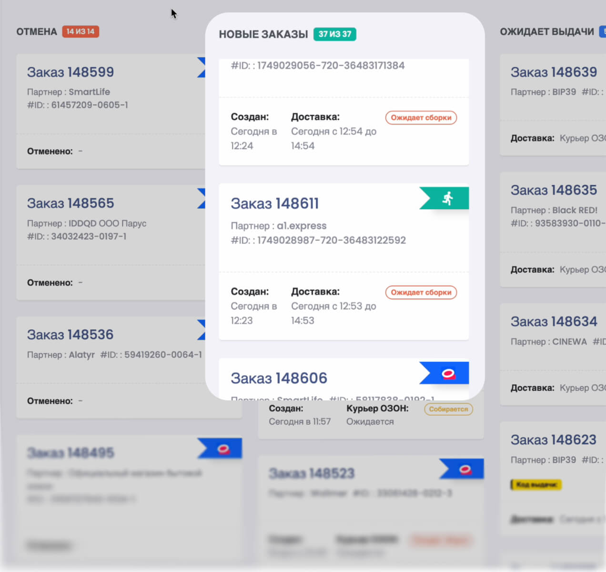
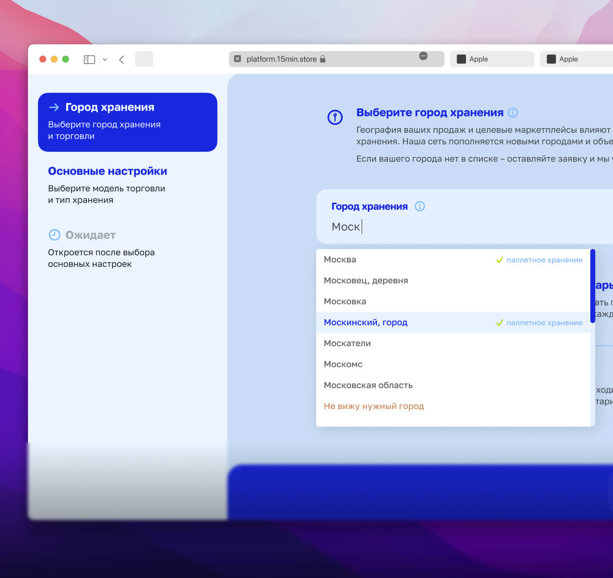
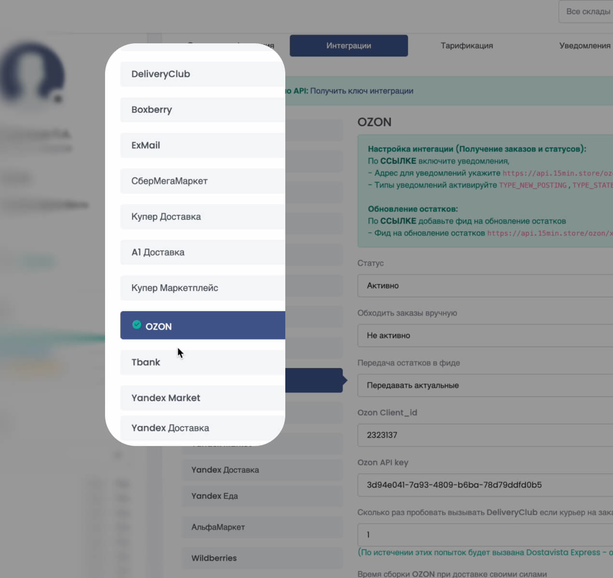
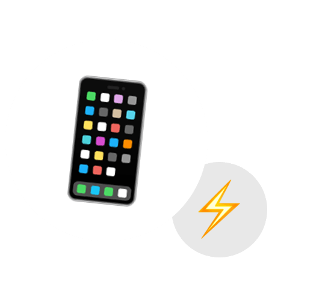

FOUNDING PILOT CDMX
LA RED URBANA PARA ENTREGAR MÁS RÁPIDO
Conectamos marcas ecommerce con espacios urbanos listos para operar como nodos de fulfillment. Tus productos más cerca. Tus pedidos más rápidos.
Piloto inicial en CDMX. Estamos seleccionando marcas y espacios fundadores.
THE PROBLEM
LA ÚLTIMA MILLA ESTÁ ROTA
Los clientes esperan velocidad, pero abrir bodegas propias, contratar flota y operar fulfillment por zona es caro, lento y difícil de escalar.
HOW IT WORKS
TUS PRODUCTOS. NUESTRA RED. ENTREGA LOCAL.
DRKSTR coloca tus SKU de mayor rotación en nodos urbanos conectados por tecnología. Cuando llega un pedido, el nodo prepara el producto y lo entrega más rápido desde una ubicación cercana.
STORE
La marca envía sus top-SKU al piloto.
NODE
El inventario se almacena cerca de la demanda.
ORDER
La plataforma recibe y enruta el pedido.
DELIVER
Pick, pack, handoff y entrega express.

Order routing
Pedidos, estados y handoff operacional en un flujo visible para marca y nodo.

Node matching
La liquidez se valida por zonas: demanda cercana, capacidad disponible y SLA real.

WMS + integraciones
El piloto mide el fit antes de escalar integraciones profundas o flujos avanzados.
TWO SIDES
ELIGE TU LADO DE LA RED
SOY MARCA / SELLER
Quiero vender con entrega express sin abrir bodegas ni construir operación logística propia.
- Fulfillment urbano para top-SKU
- Inventario cerca del cliente en CDMX
- Pick, pack y delivery handoff
- Tracking y visibilidad operativa

TENGO UN ESPACIO
Quiero convertir mi bodega, local o punto operativo en un nodo DRKSTR.
- Monetiza espacio disponible
- Opera pedidos ecommerce con proceso
- Recepción, picking y packing
- Ingresos por almacenamiento y operación
FOR BRANDS
VENDE CON ENTREGA EXPRESS SIN ABRIR BODEGAS
Coloca tus productos más vendidos en nodos urbanos y ofrece entregas rápidas en zonas piloto de CDMX.
Estamos seleccionando marcas fundadoras con demanda comprobada y productos de alta rotación.
FOR NODES
CONVIERTE TU ESPACIO EN UN NODO DRKSTR
Si tienes una bodega, local, punto logístico o espacio operativo en zona urbana, puedes monetizarlo operando fulfillment para marcas ecommerce.
No buscamos solo metros cuadrados. Buscamos espacios capaces de operar con SLA.
MARKET VALIDATION
UN PILOTO PARA ENCONTRAR LIQUIDEZ REAL
La meta no es prometer cobertura nacional desde el día uno. La meta es mapear dónde coinciden pedidos, inventario, espacios operables y tiempos de entrega competitivos.
APPLICATIONS
FORMULARIOS QUE CALIFICAN, NO SOLO CAPTURAN EMAILS
Brand fit
Usamos la aplicación para entender demanda, zonas, top-SKU, costos actuales y disposición a colocar inventario en un nodo piloto.
Aplicar como marcaNode capacity
Validamos ubicación, metros disponibles, horarios, staff, internet, CCTV y capacidad real de recepción, picking y packing.
Postular espacioLos formularios externos deben incluir consentimiento: Acepto el Aviso de Privacidad y el uso de mis datos para ser contactado sobre el piloto DRKSTR México.
PILOT
FOUNDING PILOT CDMX
Estamos seleccionando un grupo limitado de marcas y espacios para construir la primera red piloto en CDMX.
FAQ
PREGUNTAS FRECUENTES
¿DRKSTR es una empresa de mensajería?
No solo. DRKSTR es una red de fulfillment urbano. Conectamos inventario, nodos, preparación de pedidos y handoff de entrega.
¿Ya operan en México?
Estamos preparando un piloto inicial en CDMX y seleccionando marcas y espacios fundadores. No prometemos una red nacional antes de validar la liquidez local.
¿Necesito enviar todo mi inventario?
No. El piloto está pensado para top-SKU: productos con mayor rotación, demanda comprobada y mejor potencial de entrega rápida.
¿Es ingreso pasivo para dueños de espacios?
No exactamente. Un nodo requiere operación, horarios, recepción, picking, packing y cumplimiento de procesos.
¿Qué zonas entran en el piloto?
La selección depende de la concentración de demanda de marcas y la disponibilidad de espacios operables. La prioridad inicial es CDMX.
¿Cómo se conectan los pedidos?
En el MVP podemos empezar con flujos simples y externos. Las integraciones ecommerce y WMS se priorizan cuando la demanda piloto justifica automatización.
¿Qué pasa después de aplicar?
Revisamos fit, zona, volumen y capacidad operativa. Si hay match, avanzamos a una llamada y a la definición del piloto.